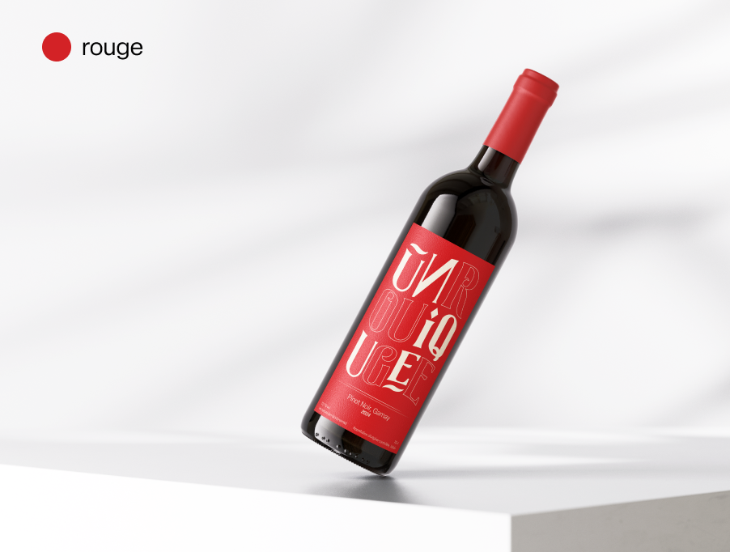

Chaque années nous renouvelons nos gammes afin de vous apporter
toujours de la nouveauté.

Notre nouvelle gamme de vins natures comprend un gewürztraminer
et un pinot noir pour tout les goûts. De l’épicé avec une touche
de gingembre ou plus doux avec des saveurs de fruits rouges.
Voir la gamme
Tous nos vins
Cette année, nous avons décidé d’apporter deux nouvelles saveurs
encore jamais explorée par la cave à travers un blanc et un
rouge.
Chez UNIQUE, notre passion pour les vins natures
transcende le simple plaisir de la dégustation. Nous croyons
fermement que chaque bouteille raconte une histoire, une
histoire d’authenticité, de respect de la terre et de la vigne.
2.
Philosophie
Notre philosophie repose sur l’harmonie entre la nature et l’art
de vinifier, une danse délicate qui célèbre l’expression pure de
notre terroir.